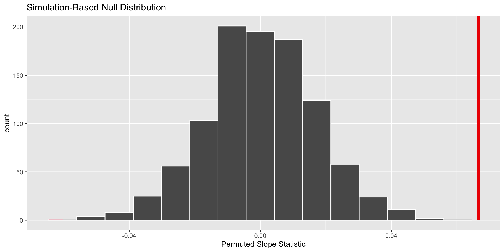

🔬 Simulation-Based Methods versus Theory-Based Methods
Plan for Revisions
Revisions will be accepted until Thursday, June 15.
- Week 8: two revisions will be accepted
- Week 9: one revision will be accepted
- Week 10: one revision will be accepted
Plan for Week 9
Asynchronous class on Tuesday and Thursday
Typical deadlines for reading (Tuesday) and tutorial (Thursday)
“Checkpoints” for Final Project incorporated throughout the week
- Introduction – Due Wednesday
- Methods – Due Friday
- Findings & Scope of Inference – Due Sunday
Some advice on the your Final Project…
What did we do on Tuesday?
We carried out a hypothesis test!
\[H_0: \beta_1 = 0\]
\[H_A: \beta_1 \neq 0\]
What do these hypotheses mean in words?
By creating a permutation distribution!
null_dist <- evals %>%
specify(response = score,
explanatory = bty_avg) %>%
hypothesise(null = "independence") %>%
generate(reps = 1000, type = "permute") %>%
calculate(stat = "slope"). . .
What is happening in the generate() step?
And visualizing where our observed statistic fell on the distribution

What would you estimate the p-value to be?
And calculated the p-value
get_p_value(null_dist,
obs_stat = obs_slope,
direction = "two-sided")# A tibble: 1 × 1
p_value
<dbl>
1 0
What would you decide for your hypothesis test?
How would this process have changed if we used theory-based methods instead?
Approximating the permutation distribution
A \(t\)-distribution can be a reasonable approximation for the permutation distribution if certain conditions are not violated.

What about the observed statistic?
obs_slope <- evals %>%
specify(response = score,
explanatory = bty_avg) %>%
calculate(stat = "slope")Response: score (numeric)
Explanatory: bty_avg (numeric)
# A tibble: 1 × 1
stat
<dbl>
1 0.0666evals_lm <- lm(score ~ bty_avg,
data = evals)
get_regression_table(evals_lm)# A tibble: 2 × 7
term estimate std_error statistic p_value lower_ci upper_ci
<chr> <dbl> <dbl> <dbl> <dbl> <dbl> <dbl>
1 intercept 3.88 0.076 51.0 0 3.73 4.03
2 bty_avg 0.067 0.016 4.09 0 0.035 0.099How did R calculate the \(t\)-statistic?
\(SE_{b_1} = \frac{\frac{s_y}{s_x} \cdot \sqrt{1 - r^2}}{\sqrt{n - 2}}\)
[1] 0.01495204\(t = \frac{b_1}{SE_{b_1}}\)
bty_avg
4.45672 # A tibble: 2 × 7
term estimate std_error statistic p_value lower_ci upper_ci
<chr> <dbl> <dbl> <dbl> <dbl> <dbl> <dbl>
1 intercept 3.88 0.076 51.0 0 3.73 4.03
2 bty_avg 0.067 0.016 4.09 0 0.035 0.099How does R calculate the p-value?
. . .

. . .
How many degrees of freedom does this \(t\)-distribution have?
Did we get similar results between these methods?
Why not always use theoretical methods?
. . .
Theory-based methods only hold if the sampling distribution is normally shaped.
The normality of a sampling distribution depends heavily on model conditions.
What are these “conditions”?
. . .
For linear regression we are assuming…
Linear relationship between \(x\) and \(y\)
Indepdent observations
Normality of residuals
Equal variance of residuals
Linear relationship between \(x\) and \(y\)

. . .
What should we do?
Variable transformation!

Independence of observations
The evals dataset contains 463 observations on 94 professors. Meaning, professors have multiple observations.
What can we do?
Best – use a random effects model
Reasonable – collapse the multiple scores into a single score
Normality of residuals

. . .
What should we do?
Variable transformation!

Equal variance of residuals

. . .
What should we do?
Variable transformation!

Are these conditions required for both methods?
. . .
Simulation-based Methods
Linearity of Relationship
Independence of Observations
Equal Variance of Residuals
Theory-based Methods
- Linearity of Relationship
- Independence of Observations
- Normality of Residuals
- Equal Variance of Residuals
What happens if the conditions are violated?
. . .
In general, when the conditions associated with these methods are violated, the permutation and \(t\)-distributions will underestimate the true standard error of the sampling distribution.